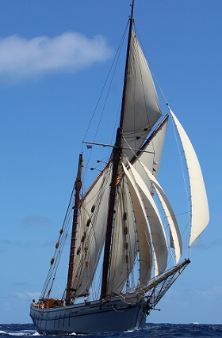
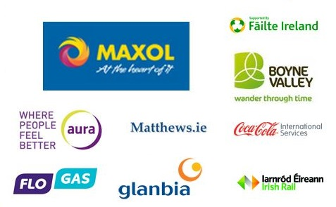

THE IRISH MARITIME FESTIVAL

Welcome to The Irish Maritime Festival - a spectacular celebration of all things seafaring taking place in Drogheda Port, County Louth from June 19th to 21st.
It takes place each summer on the quayside at Drogheda Port. The 2015 Festival will open on 19th June and run across 20th and 21st June. The festival held in summer 2014 attracted in excess of 35,000 visitors.
The Irish Maritime Festival 2015 is Ireland's largest maritime festival, held on Ireland's most historic river. Enjoy a weekend filled with tall ships, extreme water sports, river races, aquariums, music, food and lots of family fun!
Watch out for the flotilla of dastardly pirate ships sailing up the River Boyne in the ever popular Pirate Battles; look out for the brave swimmers as they battle the currents for glory in the Boyne swim; and see extreme sports on the water including jet ski displays, fly boarding, wakeboarding and stand up paddling. The Ship Showcase sees six sailing vessels on display throughout the weekend and there will be a host of other water activities to enjoy.
On shore activities include a food zone with chef demos and children's workshops; the Irish Maritime Seafood Chowder competition; Maritime History Pavilion; a funfair; the sand zone; and a music, art and photography zone. The food village is a celebration of delicious products from independent producers from the Boyne Valley Food series, Louth food producers, artisan, bakers, gourmet tasters, liqueur lovers and 'cook your own' enthusiasts.
Hosted, planned and managed by Louth County Council, in conjunction with the Drogheda Port Company, the festival is a great opportunity to explore and enjoy all that this beautiful and historic maritime town has to offer!
Festival Opening Times
Friday 19th 1pm - 8pm (Parade of Sail: 1.30pm - 3pm (All Welcome)
Saturday 20th 10am - 8pm
Sunday 21st 11pm - 7pm
Admission Fee
Free Admission on Friday for Parade of Sail and Opening Ceremony (1.30pm)
€5.00 per adult (inc. up to 2 children) for Saturday or Sunday
€10.00 Family Ticket (2 adults and up to 4 children) for Saturday or Sunday
€1 per extra child
€4.00 for Senior Citizens, Students and Teens
A discount of 20% will be available plus use of the Express Lane for guests who prebook on line at www.MaritimeFestival.ie. Online bookings will open at the end of May.

Bursary Sponsors